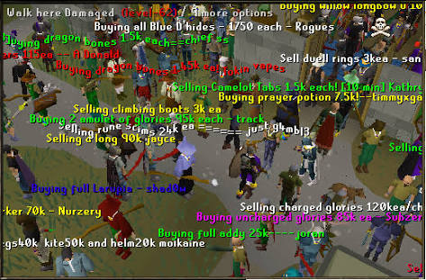

OLD SCHOOL RUNESCAPE


Old School Runescape eli OSRS on vuoden 2007 versio Runescapesta. Tämä osottautui suositummaksi valinnaksi kuin liian kehittyneeksi muodostunut "nykyinen" versio Runesta.

Runescapesta löytyy paljon tekemistä jota on mm.questaaminen, skillaaminen eli kykyjen kehittämistä, PVP eli Player Versus Player sekä PVM Player Versus Monsters